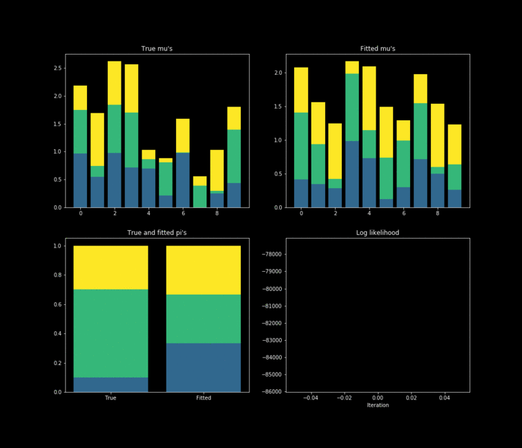

Expectation Maximization Algorithm
An expectation maximization exmaple
What this means is that there exists a data generator process to which we can only collect (or it was only collected) part of the data $X$ associated with it, instead of the full data $X, Z$. Usually a model is constructed around the marginalized maximum likelihood estimator:
$$\underset{\theta}{\mathrm{argmax}} \text{ } P\left(X | \theta\right) = \underset{\theta}{\mathrm{argmax}} \int P\left(X, Z | \theta\right) dZ$$
$$\text{Where,}$$
$$X: \text{observed variables}$$
$$Z: \text{latent variables (non observed data)}$$ However, sometimes maximizing the marginalized likelihood directly is hard. This is where the EM (Expectation Maximization) algorithm comes into play. Instead of maximizing over the marginalized likelihood, the optimization is made over the complete data likelihood.
$$\underset{\theta}{\mathrm{argmax}} \text{ } P\left(X, Z | \theta\right)$$
This procedure is also going to optimize the marginalized likelihood, but before going into why and how it works, let’s introduce a toy problem to get a better grasp. Imagine a binary data set $X$ (coin flips if you wish) generated by $K$ different multivariate Bernoulli distributions (only one distribution generates a given data point).
$$P\left(X| Z, \mu \right) = \prod_{k=1}^{K} P\left(X | \mu_k \right)^{z_k} = \prod_{k=1}^{K} \prod_{n=1}^{N} \prod_{i=1}^{D} \left[\mu_{k, i}^{x_{n,i}} (1 -\mu_{k, i})^{(1 - x_{n,i})}\right]^{z_k}$$
$$\text{Where,}$$
$$z_k: \text{binary variable that indicates if the Bernoulli distribution k generated the observation n}$$
Unfortunately by definition we don’t have access to the variables $Z$ since it wasn’t observed. Which means that we need to construct a different model. For this particular example, the model which is being used is a mixture of multivariate Bernoulli distributions.
$$P\left(X| \mu, \pi \right) = \prod_{n=1}^{N} \sum_k^K \pi_k P\left(x_n| \mu_k\right)$$
$$\text{Where,}$$
$$\pi_k: \text{probability that the Bernoulli distribution k generated the observation n}$$
Trying to maximize the log-likelihood will not yield any result since it’s intractable. It can be seen below given the summation inside the logarithm. So, in order to solve this optimization problem, the EM algorithm is used. This is an iterative process divided in two steps. The first one is called the expectation step and the second one is called the maximization step.
$$\log P\left(X| \mu, \pi \right) = \sum_{n=1}^{N} \log \left[\sum_{k=1}^{K} \pi_k P\left(x_n | \mu_k \right) \right]$$
Expectation step
In this first step, the expectation over the complete data log-likelihood is computed.
$$\mathbb{E}{Z | X, \mu, \pi} \left[\log \mathcal{L}\left(\mu, \pi ; X, Z \right)\right] = \mathbb{E}{Z | X, \mu, \pi} \left[\log P\left(X, Z | \mu, \pi\right) \right]$$
$$=\mathbb{E} \left[\log P\left(X, Z | \mu, \pi\right) \right] = \mathbb{E} \left[ \sum_{n=1}^{N} \sum_{k=1}^{K} \log \left[\pi_k P\left(x_n | \mu_k \right) \right]^{z_{n,k}} \right] $$
$$= \mathbb{E} \left[ \sum_{n=1}^{N} \sum_{k=1}^{K} z_{n,k} \left[\log \pi_k + \log P\left(x_n | \mu_k \right) \right] \right] = \mathbb{E} \left[ \sum_{n=1}^{N} \sum_{k=1}^{K} z_{n,k} \left[\log \pi_k + \log \prod_{i=1}^{D} \left[\mu_{k, i}^{x_{n,i}} (1 -\mu_{k, i})^{(1 - x_{n,i})}\right] \right] \right]$$
$$= \mathbb{E} \left[ \sum_{n=1}^{N} \sum_{k=1}^{K} z_{n,k} \left[\log \pi_k + \sum_{i=1}^{D} x_{n,i} \log \mu_{k, i} + \left(1-x_{n,i}\right) \log \left(1 - \mu_{k,i}\right)\right] \right]$$
$$= \sum_{n=1}^{N} \sum_{k=1}^{K} \mathbb{E} \left[z_{n,k}\right] \left[\log \pi_k + \sum_{i=1}^{D} x_{n,i} \log \mu_{k, i} + \left(1-x_{n,i}\right) \log \left(1 - \mu_{k,i}\right)\right] $$
In the expression above $\mathbb{E} \left[z_{n,k}\right]$ is known as the resposibility $\gamma \left(z_{n,k}\right)$ or the posterior probability $P\left(Z | X, \mu, \pi \right)$.
Maximization step
In this step the expected log-likelihood shown above is maximized with respect to the model parameters. The optimization problem is described below:
$$\underset{\mu, \pi}{\mathrm{argmax}} \text{ } \mathbb{E}_{Z | X, \mu, \pi} \left[\log \mathcal{L}\left(\mu, \pi ; X, Z \right)\right] $$
$$s.t.$$
$$\sum_{k=1}^{K} \pi_k = 1$$
The solution to this problem yields the following equations for the model parameters $\pi$ and $\mu$.
$$\pi^{EML} = \left[\frac{\sum_{N}P\left(Z | X, \mu, \pi \right)}{N}\right]_k$$
$$\mu^{EML} = \left[\frac{\sum_{N}x_{ni}P\left(Z | X, \mu, \pi \right)}{\sum_{N}P\left(Z | X, \mu, \pi \right)}\right]{k,i} = \frac{P\left(Z | X, \mu, \pi \right)^{t}X}{\sum{N}P\left(Z | X, \mu, \pi \right)}$$
In addition to the estimators, the posterior probability obtained from the optimization problem depends on the parameters.
$$P\left(Z | X, \mu, \pi \right) = \left[\frac{\pi_k p\left(x_n|\mu_k \right)}{\sum_{k}\pi_k p\left(x_n|\mu_k \right)} \right]_{n,k}$$
One interesting result from this step is that both of the model parameters depend on the responsibilities $\gamma \left(Z\right)$. This gives the EM algorithm it’s recursive characteristic. First, the model parameters are set randomly. Then the expectation step occurs, in which the responsibilities are calculated. Finally, the expected maximum likelihood parameters are updated given the new responsibilities. This cycle occurs until convergence of the parameters (the parameters are only set randomly once).
The probability of the observations given a particular distribution $k$ can be calculated using matrices the following way:$$P\left(X | \mu \right) = \left[\prod_i \mu_{ki}^{x_ni} \left(1 - \mu_{ki} \right)^{\left(1- x_{ni}\right)} \right]_{n,k} = exp\left(X \log\left(\mu^{t}\right) + \left(1 - X \right) \log\left(1 - \mu^{t} \right)\right)$$
Simulation and conclusion
The toy example presented above is implemented in Python. In this case, $10,000$ data points are generated by $K=3$ $Bernoulli\left(\mu_k \right)$ distributions where $\mu_{k} \in \mathbb{R}^{D}, \text{ } D=10$. The results of the fitting process can be seen below. Each colour represents one of the $k$ parameters associated with a specific Bernoulli distribution. Something noticeable at first sight, is that the true parameters and the fitted one’s diverge. However, this is due to the fact that the “yellow” dimension of the fitted resembles the “blue” one from the data. While the “blue” dimension of the fitted resembles the “yellow” one on the true parameters. One thing to remember is that the model never has access to the latent variable $Z$ in the whole fitting process. With this in mind, is clear that the algorithm does well in the sense that the estimated parameters are close to the real ones. Nonetheless, is important to keep in mind that in reality we don’t know the data generator process, which entails that our choice to model the data a certain way under some unknown latent variables will affect greatly the performance of the estimators. The more complex the model, the more information it can capture about the latent variables at the cost of a longer training and less interpretability.
Notes
There is no guarantee that the EM algorithm will end up in a local maximum.
The proof that maximizing the expected log-likelihood of the complete data also improves the log-likelihood of the data given the model parameters can be found in Wikipedia (TLDR: the expected log-likelihood of the complete data is a lower bound of the log-likelihood of the observed data)

import numpy as np
import matplotlib.pyplot as plt
plt.style.use('dark_background')
# Parameters for the simulation.
seed = 4
np.random.seed(seed)
K = 3
D = 10
N = 10000
max_it = 100
min_change = 0.1
# Model parameters.
true_pi = np.array([[0.1, 0.6, 0.3]])
true_mu = np.random.uniform(size=(K, D))
X = np.zeros(shape=(N, D))
# Populating the data.
for n in range(N):
k = np.random.choice(3, p=true_pi[0])
X[n, ] = np.random.binomial(n=1 , p=true_mu[k, ])
# Defining a class for the EM algorithm.
class EMMBernoulli:
def __init__(self, max_it, min_change, verbose=True):
"""A Class that will hold information related with a expectation
maximization algorithm when assuming a mixture of multivariate
bernoulli distributions as the data generator process.
Parameters
----------
max_it : int
Number of maximum iterations to run the simulation.
min_change : float
Minimum change of the log likelihood per iteration to continue
the fitting process.
verbose : float, default True
Whether to print or not information about the training.
"""
# Attributes.
self.X = None
self.max_it = max_it
self.min_change = min_change
self.N = None
self.D = None
self.verbose = verbose
self.K = None
self.pi = None
self.mu = None
self.llik = None
def fit(self, X, K=3):
"""Fit the desired data X with a mixture of K
multivariate bernoulli distributions using the
Expected Maximization Algorithm.
Parameters
----------
X : np.array
Numpy array that will hold the data, it must be filled with ones
or zeroes.
K : int
Number of multivariate bernoulli distributions.
Return
------
None
"""
# Number of multivariate bernoulli distributions.
self.X = X
self.N = X.shape[0]
self.D = X.shape[1]
self.K = K
self.llik = []
# Populating randomly the parameters to estimate.
self.pi = np.array([[1 / K for k in range(self.K)]])
self.mu = np.random.uniform(size=(self.K, self.D))
# Training loop.
for i in range(self.N):
####################
# Expectation step #
####################
# The p_x_mu is a matrix of dim (N, K).
# This matrix contains the probability of
# the observation X_{n, k} given mu_{k}
# P(X_{n, k} | mu_{k}).
p_x_mu = np.exp(self.X @ np.log(self.mu.T) +
(1 - self.X) @ np.log(1 - self.mu.T))
# Calculating the posterior P(Z | X, mu, pi).
# This matrix is going to be the same shape / dim as p_x_mu.
# the numerator is equal to:
# \pi_{k} * p(X_n | \mu_k)
# The denominator is equal to:
# \sum_k \pi_{k} * p(X_n | \mu_k).
numerator_pos = p_x_mu * self.pi
denominator_pos = np.sum(numerator_pos, axis=1, keepdims=True)
posterior = numerator_pos / denominator_pos
##############################
# Log likelihood computation #
##############################
self.llik.append(np.sum(np.log(denominator_pos)))
# Stopping condition for the fitting.
if len(self.llik) > 1:
delta = self.llik[-1] - self.llik[-2]
if delta <= self.min_change:
return None
# Printing the results.
if self.verbose:
print(f'Iteration: {i :4d} | Log likelihood: {self.llik[i] : 07.5f}')
#####################
# Maximization step #
#####################
# Getting the parameters such that
# it maximizes the current Q(parameters).
# Getting pi(t).
numerator_pi = np.sum(posterior, axis=0, keepdims=True)
self.pi = numerator_pi / self.N
# Getting mu(t).
self.mu = (posterior.T @ self.X) / numerator_pi.T
def plot(self, true_mu, true_pi):
"""Plot the results of the fitting procedure.
Parameters
----------
true_mu : np.array
Numpy array containing the true values for mu.
true_pi : np.array
Numpy array containing the true values for pi.
"""
# Verifying that the model has been fitted.
assert self.K is not None, "The model hasn't being fitted"
# Plotting the results.
fig, axs = plt.subplots(2, 2, figsize=(14, 12))
# Plotting the mu's.
axs[0, 0].set_title("True mu's")
axs[0, 1].set_title("Fitted mu's")
axs[1, 0].set_title("True and fitted pi's")
axs[1, 0].set_xticks(range(2))
axs[1, 0].set_xticklabels(("True", "Fitted"))
axs[1, 1].set_title("Log likelihood")
axs[1, 1].set_xlabel("Iteration")
for i in range(self.K):
# Calculating the bottom for the stacked bar plot.
if i == 0:
true_bottom = 0
fitted_bottom = 0
pi_bottom = 0
else:
true_bottom = np.sum(true_mu[0:i, ], axis=0)
fitted_bottom = np.sum(self.mu[0:i, ], axis=0)
pi_bottom = [np.sum(true_pi[0, :i]), np.sum(self.pi[0, :i])]
color = plt.cm.viridis((i + 1) / self.K)
axs[0, 0].bar(range(self.D),
true_mu[i, ],
bottom=true_bottom,
color=color)
axs[0, 1].bar(range(self.D),
self.mu[i, ],
bottom=fitted_bottom,
color=color)
axs[1, 0].bar(range(2),
[true_pi[0, i], self.pi[0, i]],
bottom=pi_bottom,
color=color)
axs[1, 1].plot(range(len(self.llik)), self.llik)
plt.show()
def main():
model = EMMBernoulli(X, max_it, min_change)
model.fit(X, K=3)
model.plot(true_mu, true_pi)
if __name__ == "__main__":
main()
references
- Christopher M. Bishop. 2006. Pattern Recognition and Machine Learning (Information Science and Statistics). Springer-Verlag, Berlin, Heidelberg.